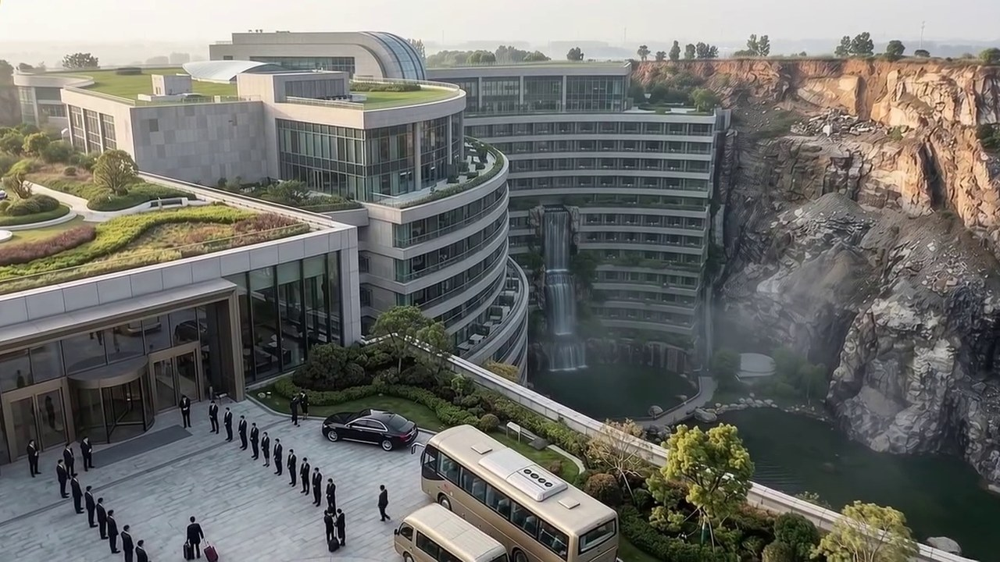
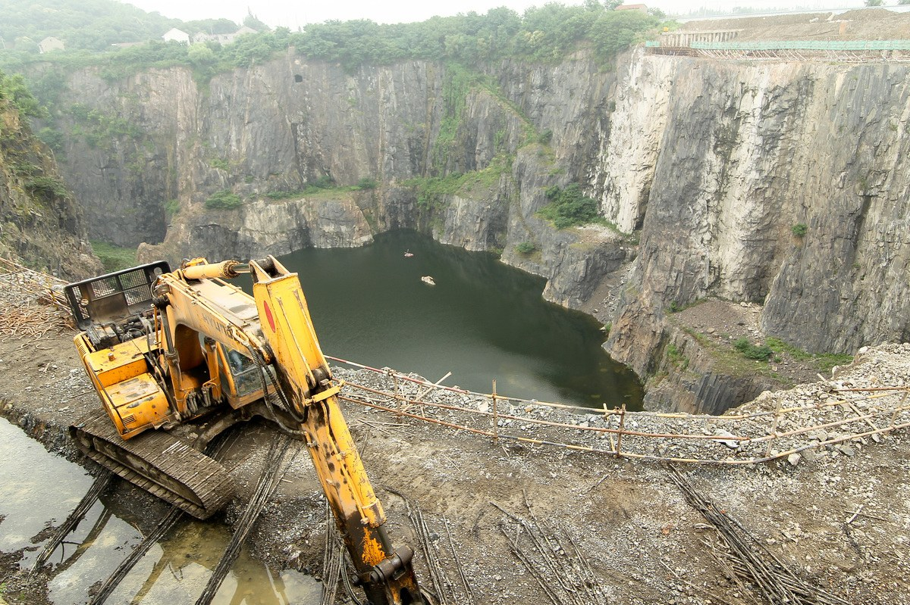
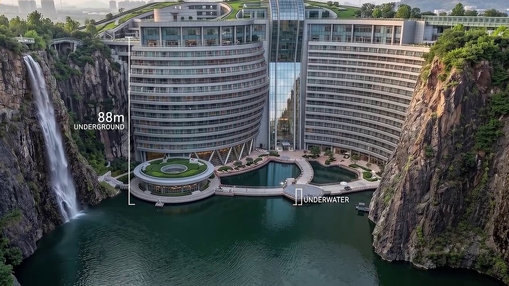
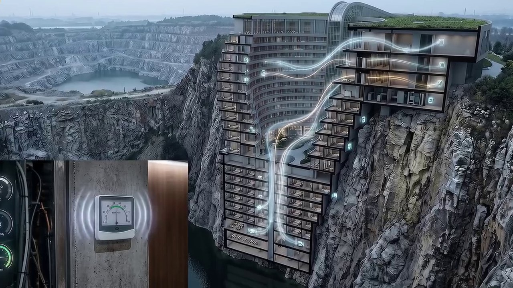
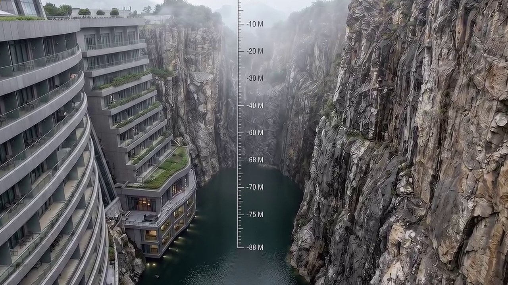
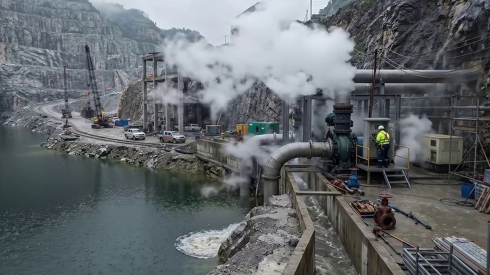
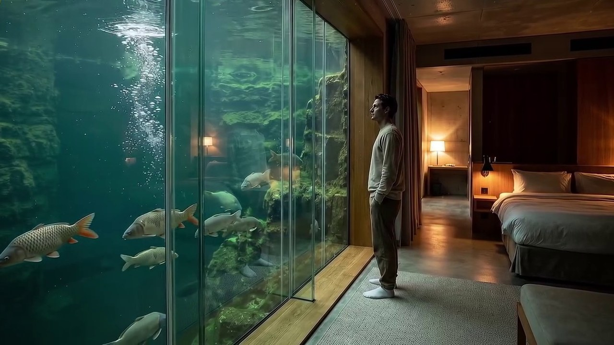
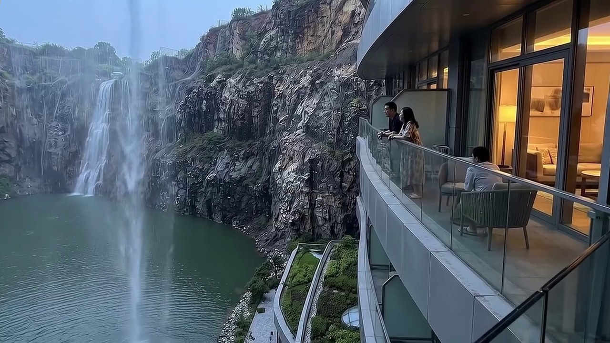

上海 · 松江 · 佘山
一座酒店，
向深坑之中生长。
上海佘山世茂洲际酒店把客房与公共空间嵌入旧采石场的岩壁。这里值得看的，不只是“地下”这个标签，还有建筑如何回应地形、水位与景观。
独立建筑专题 · 以公开项目资料为依据

项目影像 · 可能含效果图/动画约 88 m向下延伸的公开尺度
18 层两层地上，十六层地下
2 层位于水下的楼层
2018酒店公开开业年份
女声普通话导览 · 约 76 秒
从旧采石场到酒店：跟随讲解看懂场地与空间
简体中文字幕 · 女性旁白 · 侧边讲解画面
画面剪辑自项目介绍视频，可能包含效果图或动画，并非全部实景摄影。开场侧边女性为 Mixkit 免费素材讲解画面，不代表酒店员工或官方代言人；中文声音为合成旁白配音。
关于场地再利用采石场不是背景板，
采石场不是背景板，
而是建筑的一部分。
酒店的外观与体验都依赖坑壁、湖面和地形尺度。我们把可核实的项目事实与示意性解释分开呈现：有出处的数字列出来源；通用工程原理明确标注，不伪装成酒店施工细节。
完整指南
上海深坑酒店：从场地、楼层到工程的完整介绍
一页读懂建筑与场地
上海佘山世茂洲际酒店并非建在一片平整的地面上。它进入松江佘山一带的旧采石场，把大部分楼层安置在岩壁之间，让坑壁、水面与山地成为建筑体验的一部分。理解它，先要看清原有地形，再看建筑怎样沿着这片地形组织客房、公共空间和垂直交通。
酒店由世茂集团开发、洲际酒店集团管理。IHG于2018年11月公布开业信息。项目公开资料将酒店描述为18层：两层在地面以上，16层向下延伸，其中两层处在水下。对于许多访客来说，这种“地上少、地下多”的剖面关系，比单纯的高度更能解释酒店为什么如此特别。
本页汇集场地背景、空间组织、公开工程信息和景观设计，并链接到五篇专题。所有具体数字都以公开项目资料为依据；未披露的构造细节不作猜测。

01 · 场地
先有采石场，后有酒店
酒店的关键不是把一个寻常建筑“放进坑里”，而是利用既有采石场形成的巨大高差。采石活动留下的岩壁与坑底水面，提供了独特的空间边界；与此同时，它们也带来与普通城市酒店不同的场地条件。项目资料记载，建筑所在的采石场向下约88米，酒店沿坑壁分层布置。
这种再利用方式没有把采石痕迹完全遮住。进入酒店后，客人仍能感受到岩石、水面和建筑之间的对照。高处的地面入口与坑底的水边空间，共同构成一条从山地边缘走向深坑内部的体验路线。对建筑来说，原有地形既是景观资源，也是需要认真研究的工程条件。
把它称为“地下酒店”可以帮助理解楼层分布，但并不代表整栋建筑被埋在土里。更准确的说法是：主体依附在采石场岩壁上，建筑的一部分高于地面，更多楼层向坑内下行，最下方另有水下空间。

02 · 楼层
18层空间，向采石场内部展开
IHG与工程项目资料记载，酒店共有18层，其中两层位于地面之上，16层位于地面以下；水下楼层是地下空间的一部分。公开资料同时列出336间客房与套房。不同来源对个别房间数或项目名称的表述可能略有不同，因此本页采用酒店集团开业资料中给出的数字。
从空间体验看，地面层负责将访客带入酒店；向下的客房翼面对岩壁、瀑布与坑底景观；水下空间则把观看关系转向水体。楼层的垂直顺序，正是建筑故事的主线。它解释了为什么同一栋建筑里，既有面向山地的绿化屋顶，也有靠近湖面的水下体验。
数字背后的阅读方式
读懂楼层表时，注意区分“地面以下”与“水面以下”。这两个概念不相同：一个是相对周围地面高度，另一个是相对水位。并非所有地下楼层都在水里，更不是整家酒店沉在湖中。

03 · 建筑
让建筑回应岩壁，而不是与场地竞争
酒店沿采石场岩壁形成层层退台的体量。客房翼、露台和公共空间随着坑壁展开，让视线能够越过室内边界，看到岩石、瀑布或坑底水面。设计没有用一座孤立高塔压过周围环境，而是把建筑拆解为多个与地形相连的部分。
垂直玻璃中庭是项目最醒目的空间线索之一。它把入口与较低楼层联系起来，也让光线和视线进入深坑内部。外部瀑布与玻璃中庭形成视觉呼应，但两者并非同一个构造。项目设计资料由建筑师Martin Jochman及JADE+QA团队持续完善，最初概念与Atkins团队合作完成。
屋顶绿化与退台露台进一步柔化了从坑缘看到的建筑轮廓。它们让建筑表面与周围山地形成联系，但具体植物配置、可进入区域和日常维护情况可能随运营调整，现场信息应以酒店最新说明为准。

04 · 工程
深坑建造，场地稳定与水管理缺一不可
在深坑内建造酒店，需要把岩壁、坑底、地下空间和水位变化放在同一张图里考虑。WSP的项目介绍提到，团队针对历史及预测降雨、地表径流和岩壁渗水开展洪水风险评估，并采用流体分析研究深坑微气候；应急泵也被纳入风险控制思路。
这些公开信息说明，水不是单纯的景观装饰。雨水最终可能沿地形汇集，岩壁也可能存在渗水；地下空间的设备运行与维护，需要结合现场排水和风险管理安排。对访客而言，看到的是水边客房和瀑布；对工程团队而言，背后还包括监测、排水、机电系统与维护计划。
施工顺序同样受到场地限制。项目建筑团队的公开时间线显示，邻近酒店翼的岩壁稳定工作先行，坑底基础及下部结构随后推进，主体钢结构于2016年开始在坑内施工，内部装修与景观工作在2018年秋季完成。公开资料没有披露的计算参数和施工细节，不应以推测补齐。

05 · 水下空间
水下体验，核心是清楚的室内外边界
水下客房和水族景观是酒店最受关注的体验之一。客人身处干燥的室内，通过透明界面观看水体环境。要准确理解这一设计，应把空间相对水位的位置与整栋建筑的结构分开：仅部分楼层处于水下，其他地下楼层仍位于水面以上。
水下空间的一般工程重点包括水压、防水接缝、材料耐久、排水、设备检修以及异常情况的处置。以上是建筑工程常见考虑，不是对酒店具体施工做法的断言。酒店公开项目资料没有逐项公开完整构造，因此本专题只介绍可核实的空间关系与一般原理。
水下房间的体验也不只是“看鱼”。光线、室内尺度、水族环境和日常维护共同影响观感。水族系统需要独立管理水质与设备；酒店建筑本身则需要持续维护室内环境和安全边界。把体验与维护放在一起看，才能理解这种空间为什么既迷人，也需要谨慎设计。

06 · 景观与能源
保留采石场的视觉力量，再加入新的用途
屋顶绿化、层层露台、岩壁和水面组成酒店的景观层次。WSP资料把绿化屋顶、太阳能与地热相关内容列为项目的设计特点。介绍这些技术时，需要区分“设计中纳入相关系统”和“酒店运营完全依靠可再生能源”——后者需要实际运营数据支持，不能仅由设计介绍推断。
旧采石场的再利用也不是让场地自动恢复原貌。岩壁、绿化、水体、设备和公共空间都需要长期维护。酒店把采石场变成新的目的地，同时让旧地形继续可见；其长期环境表现，则要结合维护、资源使用与运行数据持续评估。

项目资料
关键事实一览
来源链接见表格下方
| 项目名称 | 上海佘山世茂洲际酒店（InterContinental Shanghai Wonderland） |
|---|---|
| 所在区域 | 中国上海市松江区，佘山一带 |
| 原有场地 | 废弃采石场 |
| 楼层布局 | 18层：两层地上、16层地下；其中两层位于水下 |
| 向下尺度 | 项目资料约记88米 |
| 客房与套房 | IHG开业资料记载336间 |
| 开业时间 | 2018年11月 |
| 开发与管理 | 世茂集团开发，洲际酒店集团管理 |
资料来源：IHG开业资料、WSP项目介绍、JADE+QA项目资料。
专题阅读
从场地到空间，逐层了解
五篇专题 · 场地、建筑、工程与景观
常见问题
关于上海深坑酒店
点击问题展开简短回答
上海深坑酒店在哪里？
它位于上海市松江区佘山一带，建筑嵌入旧采石场岩壁。前往方式、交通时间和开放安排，请以酒店当前信息为准。
酒店有多少层？
IHG与项目资料将其描述为18层：两层在地面之上、16层在地面以下，其中两层位于水下。
整座酒店都在水下吗？
不是。只有公开资料所述的两层位于水下；地面以上和地下但高于水位的空间共同组成整座酒店。
酒店什么时候开业？
IHG于2018年11月公布开业消息。当前营业状态、房型与设施安排可能变化，应直接向酒店核实。
谁开发和管理这家酒店？
IHG开业资料称，项目由世茂集团开发，并由洲际酒店集团管理。
酒店向下有多深？
项目公开资料常以约88米描述其向下延伸尺度。不同资料的测量基准可能不同，这里不把它当作每个楼层的精确标高。
酒店是否完全使用太阳能或地热？
工程顾问资料提到项目的太阳能与地热相关设计内容，但没有据此证明酒店全部能源都来自可再生能源。
本站是酒店官网吗？
不是。本站是独立建筑专题，不负责预订、报价或酒店客服，也与酒店运营方和开发商无隶属关系。